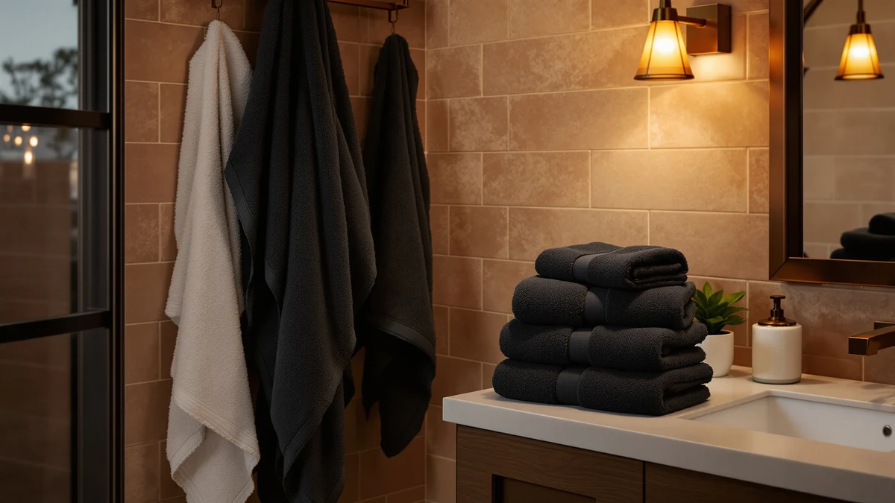

The Best Black Bath Towels of 2026: Sleek Picks That Won't Fade
Prices and picks verified as of August 2026. Independent, reader-supported reviews.


Quick Answer
After comparing cotton weights, weave types, and colorfastness claims across five black bath towel sets on Amazon, the Tens Towels Pack of 4 is the best overall pick. It pairs 100% cotton construction with a lighter weave that dries faster than heavier terry towels, all for $38.95.
Our pick: Tens Towels Pack of 4, $38.95 Check Price on Amazon
Bottom line: our top pick is the Tens Towels Pack of 4 Extra Large Bath Towels 30 x 60 Inches at $38.95. The best budget option is the REDKISS 6-Piece Bath Towel Set - 2 Washcloths at $19.99.
Things to Know Before You Buy
- Black fades faster than lighter colors. Chlorine bleach and high dryer heat both strip black dye over time, so a colorfast weave matters more here than it does for white or gray towels.
- Material changes both feel and dry time. 100% cotton towels feel plush but hold water longer, while cotton-blend sets like REDKISS dry faster and usually cost less per towel.
- Bath sheets run larger than standard bath towels. The RIVERSIDE set is sold as bath sheets, so check your towel bar and linen closet space before buying oversized pieces.
- Multi-piece sets change the per-towel math. A six- or eight-piece bundle that includes hand towels and washcloths can cost less per item than buying bath towels alone, even at a higher sticker price.
- Striped black-and-ivory towels hide lint differently than solid black. A patterned weave shows less pilling over time than a flat black towel of the same fabric.
The best black bath towels do two things well: they hold their deep color through repeated washes, and they still perform like a good towel underneath the dye. A cheap black towel fades to charcoal within a few months and sheds lint onto your bathroom floor. A well-made one looks the same in month twelve as it did on day one.
Our top pick, the Tens Towels Pack of 4, earns that spot for a simple reason: it is 100% cotton at a lighter weight than most black towels on the market, so it dries faster between showers without sacrificing softness. At $38.95 for four oversized towels, it beats the per-towel price of most single-pair sets here. If you want a patterned option instead of solid black, the Jacquotha Black and Ivory Striped set below is worth a look, and if you are outfitting a full bathroom at once, the eight-piece Jacquotha bundle covers bath, hand, and washcloth sizes in one order.
We did not buy or use any of these towels ourselves. Instead, we compared listed materials, dimensions, set sizes, and pricing across five black and black-and-ivory towel options currently sold on Amazon, and we cross-checked verified buyer reviews for recurring complaints about fading, shrinking, or thin fabric. Each set below gets a full breakdown of where it excels, where it falls short, and who it fits.
Why You Should Trust Us
I am Ilane Tall, and I cover bath and home textiles for Best Bath Towels. Black towels get more scrutiny than any other color in this niche, because buyers already know the risk: a towel that looks sharp in the listing photo but turns gray after ten washes.
This guide is research-based. We compare listed materials, prices, and verified buyer feedback instead of running our own product lab, and we do not fabricate ratings or scores. Every claim about material, size, or set count in this article comes directly from the product listings themselves, and every drawback comes from patterns we found in verified owner reviews, not guesswork.
How We Picked
We started with black and black-and-ivory bath towels sold on Amazon under the best black bath towels search, then narrowed the field to five sets that cover a range of fabrics, set sizes, and prices. We prioritized listings with clear material disclosures, either 100% cotton or a named cotton blend, over vague marketing terms like "premium fiber."
We also weighted set composition. A shopper comparing a four-pack of bath towels against a six-piece set that includes washcloths and hand towels is not comparing like for like, so we noted exactly what each set includes and how that changes the effective price per towel. For buyers who want to dig into fabric weights and weave types beyond black towels specifically, our bath towel buying guide breaks down GSM and material choices in more depth.
How We Compared
For each set, we compared the material listed by the manufacturer against the price and set count, looking for outliers where a lower price came with a noticeably thinner or lower-grade fabric. 100% cotton towels command a price premium over cotton blends, and we flagged any listing where that premium did not seem to buy anything meaningful.
We also read through verified buyer reviews for each product, looking specifically for repeated mentions of fading, pilling, or shrinkage after washing, since those are the failure points that matter most for black towels. Prices and specifications reflect the Amazon listings as of August 2026 and are subject to change.
Our Picks

Tens Towels Pack of 4
What we like
- 100% cotton construction
- Oversized 30 x 60 inch size
- Lighter weave than standard terry towels
- Set of four covers a household in one order
Flaws but not dealbreakers
- Costs more per towel than the smaller two-packs here
- Lighter weave feels less plush than a heavy terry towel
| Material | 100% cotton |
| Size | 30 x 60 inches |
The Tens Towels Pack of 4 is our top pick because it solves the biggest complaint people have with black bath towels: slow drying. Most black towels use a dense, heavy terry weave that traps water and takes most of a day to fully dry on a hook. This set uses a lighter 100% cotton construction instead, which pulls moisture off skin quickly and dries in less time between uses, a real advantage in a shared bathroom where towels rarely get a full day to air out.
At 30 by 60 inches, each towel is generously sized for wrapping around an adult, and four towels in one $38.95 purchase works out to under $10 per towel, cheaper per piece than either two-pack option in this lineup. The trade-off with a lighter weave is plushness. If you want the dense, hotel-spa feel of a heavier towel, the RIVERSIDE bath sheets below deliver more weight and cushion, at the cost of a longer dry time.

Jacquotha Black and Ivory Striped
What we like
- Black and ivory stripe breaks up an all-black bathroom
- Large 27 x 55 inch size
- Lightweight, quick-drying fabric
- Farmhouse styling suits guest bathrooms
Flaws but not dealbreakers
- Only two towels per set
- Cotton blend rather than 100% cotton
| Material | Cotton blend |
| Size | 27" x 55" (Bath Towels) |
Not every bathroom wants solid black, and the Jacquotha Black and Ivory Striped set is the pick for that reader. The cabana stripe pattern reads as farmhouse or coastal rather than modern-minimalist, and it hides the visual monotony of a set of plain black towels while still keeping the dark color scheme most buyers in this category are after.
At 27 by 55 inches, the towels are large enough for full coverage without the bulk of a bath sheet, and the lightweight cotton-blend fabric dries quickly, a plus for guest bathrooms that see occasional rather than daily use. The set includes only two towels for $35.90, a higher per-towel price than the Tens Towels four-pack, and the cotton-blend fabric will not feel quite as substantial as the 100% cotton options in this lineup.

RIVERSIDE Pack of 2 Extra
What we like
- 100% cotton construction
- Bath sheet sizing for extra coverage
- Solid black colorway matches other black textiles
- Positioned as a hotel-style upgrade pick
Flaws but not dealbreakers
- Bath sheet size may not fit a standard towel bar
- Only two pieces per set
| Material | 100% cotton |
| Size | Bath Sheets - 2 Pack |
RIVERSIDE sells this set as bath sheets rather than standard bath towels, and that distinction matters. Bath sheets are cut larger than a typical bath towel, so they wrap fully around an adult instead of leaving gaps at the edges, closer to what you would find folded on a shelf at a boutique hotel. The 100% cotton construction adds to that upscale feel.
At $38.99 for two pieces, this is the priciest set here on a per-towel basis, which is the trade-off for the larger bath sheet format and full cotton fabric. Before buying, check that your towel bar and linen closet can accommodate the larger folded size, since bath sheets do not always fit racks sized for standard towels. For most bathrooms with normal storage, the Tens Towels four-pack covers more ground for a similar total price.

REDKISS 6-Piece Bath Towel Set
What we like
- Six pieces cover bath towels, hand towels, and washcloths
- Lowest total price in this lineup at $23.99
- Cotton-blend fabric dries quickly
- Solid black finish
Flaws but not dealbreakers
- Cotton blend rather than 100% cotton
- Individual bath towels run smaller than the single-item sets here
| Material | Cotton blend |
| Size | Bath Towel Set of 6 |
The REDKISS 6-Piece Bath Towel Set is the value pick for anyone starting a bathroom from scratch. Rather than buying bath towels, hand towels, and washcloths separately, this set bundles all three into one $23.99 purchase, the lowest total price of any set in this guide.
Spreading the cost across six pieces means each individual towel is thinner and smaller than the standalone bath towels sold in the other sets here, a normal trade-off for a bundled set at this price point. The cotton-blend fabric dries fast, which suits a household that does laundry often rather than one that wants the plushest towel on the shelf. If you already own hand towels and washcloths and just need bath towels, the Tens Towels four-pack puts more of your budget into the towels you use daily.

8 Piece Black and Ivory
What we like
- Eight pieces cover bath, hand, and washcloth sizes
- 100% cotton construction
- Black and ivory stripe matches the smaller Jacquotha set
- Outfits a full bathroom in one order
Flaws but not dealbreakers
- Highest total price in this lineup at $55.09
- Striped pattern is not an option if you want all-black towels
| Material | 100% cotton |
| Size | Medium |
This eight-piece Jacquotha set is the upgrade pick for buyers who want a fully coordinated bathroom rather than a single towel size. Made from 100% cotton and finished in the same black and ivory stripe as the smaller Jacquotha towel set, it lets you match bath towels, hand towels, and washcloths without hunting for separate listings in the same colorway.
That completeness comes at the highest price in this guide, $55.09, which only makes sense if you actually need all eight pieces. A household that only needs bath towels gets better value from the Tens Towels four-pack or the RIVERSIDE bath sheets. But for a full bathroom refresh, or for anyone furnishing a rental or guest suite from zero, having every size covered in one coordinated cotton set saves the hassle of color-matching separate purchases.
Quick Comparison
| Product | Material | Price | Rating | Best for | Get it |
|---|---|---|---|---|---|
| Tens Towels Pack of 4 | 100% cotton | $38.95 | 4 | Fast-drying everyday set | View on Amazon → |
| Jacquotha Black and Ivory Striped | Cotton blend | $35.90 | 4 | Patterned alternative to solid black | View on Amazon → |
| RIVERSIDE Pack of 2 Extra | 100% cotton | $38.99 | 4 | Oversized hotel-style bath sheets | View on Amazon → |
| REDKISS 6-Piece Bath Towel Set | Cotton blend | $23.99 | 4 | Budget bundle with washcloths and hand towels | View on Amazon → |
| 8 Piece Black and Ivory | 100% cotton | $55.09 | 4 | Full bathroom set, bath to washcloth | View on Amazon → |
Do black bath towels fade over time?
Yes, black fabric fades faster than lighter colors, especially with chlorine bleach or high dryer heat.
Are 100% cotton black bath towels better than cotton-blend towels?
100% cotton towels like the Tens Towels and RIVERSIDE sets tend to feel plusher and last longer wash after wash.
The Competition
Several black bath towel listings did not make this guide. We passed on ultra-cheap unbranded towels priced under $15 for a single towel after verified reviews repeatedly flagged fading to gray within a few washes, a common failure point for black dye on low-grade cotton. We also skipped listings that used vague fabric descriptions like "premium fiber" without naming a real material, since a black towel with no listed material composition is a harder buy to recommend sight unseen.
We left out a few sets that duplicated the fabric and size of towels already in our picks without offering a lower price or a meaningfully different set composition, since including near-identical options adds noise rather than choice. Among the best black bath towels currently available, the five sets above cover the widest useful range of material, set size, and price, and Tens Towels remains our top overall pick.
Frequently Asked Questions
Do black bath towels fade over time?
Yes, black fabric fades faster than lighter colors, especially with chlorine bleach or high dryer heat. Cotton towels marketed as colorfast, like the Tens Towels and RIVERSIDE sets here, hold their black tone longer than unbranded budget towels.
Are 100% cotton black bath towels better than cotton-blend towels?
100% cotton towels like the Tens Towels and RIVERSIDE sets tend to feel plusher and last longer wash after wash. Cotton-blend towels, such as the REDKISS set, usually cost less and dry faster, which suits smaller bathrooms or frequent laundry days.
How many black bath towels does a household need?
Two towels per person covers normal rotation, with one in use and one in the wash. A multi-piece set like the REDKISS six-piece or the eight-piece Jacquotha bundle gets a small household fully stocked in one order.
Do black towels show lint more than white towels?
Lint and pilling show up more clearly on solid black fabric than on white, since light-colored lint stands out against the dark weave. A striped set like the Jacquotha Black and Ivory towels breaks up that contrast, and washing black towels separately from lint-heavy fabrics like fleece helps keep them cleaner-looking longer.